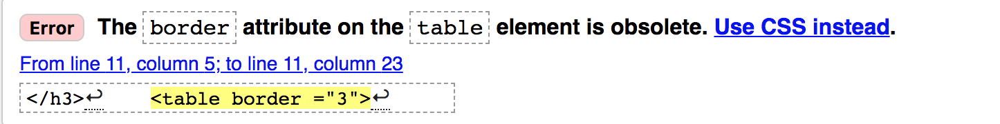

Trying to set border for my table and put border attribute there but the validator says it is obsolate.
This issue has been resolved.
Solution: "border" is too old and lack of support. You can set border attribute in css. Using inline style or include <style> in the head. Remember to refer to the part you want to change border for.